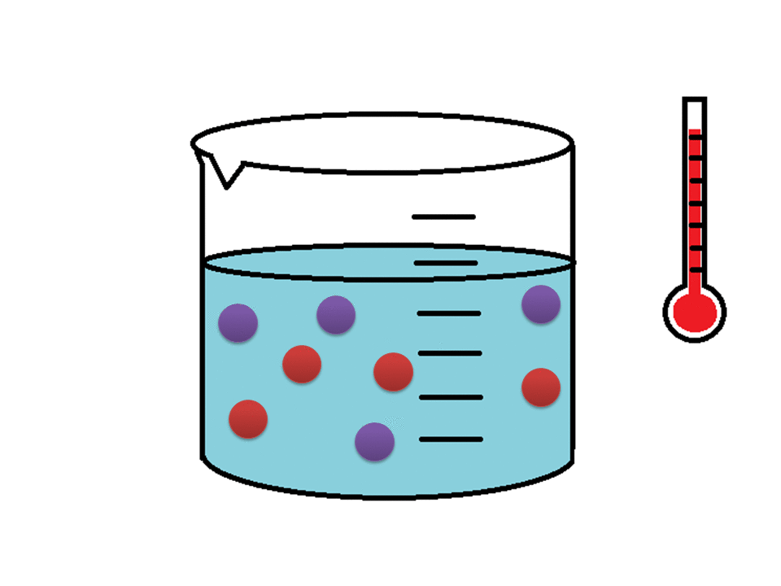
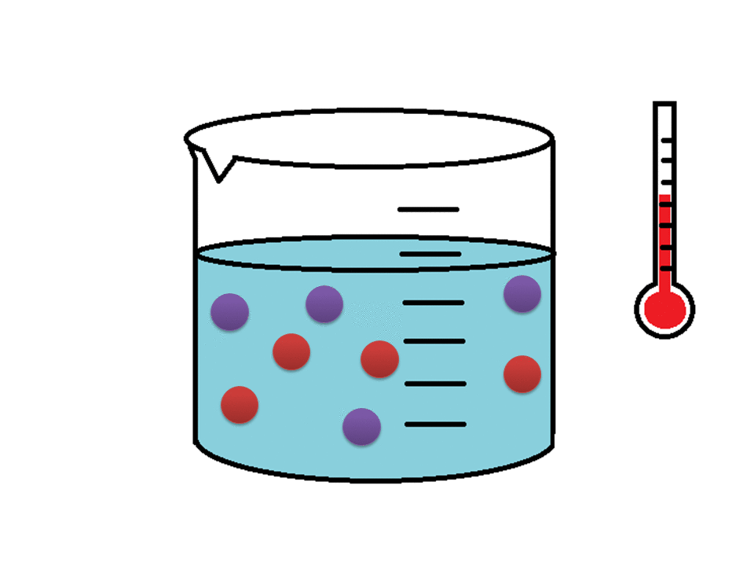

Quando há um aumento na temperatura, as moléculas se movem mais rapidamente devido a energia fornecida ser maior do que a energia mínima necessária para a reação. Assim, ocorre maior número de colisões efetivas e consequentemente a reação química será mais rápida.
Ao diminuir a temperatura, a reação ocorrerá de forma mais lenta. Isso acontece porque não há muita energia para a agitação das moléculas para uma maior frequência de choques entre elas e como também a força com que elas se chocam (energia de ativação). Desse modo, ocorrem poucas colisões efetivas.
 CINÉTICA
CINÉTICA